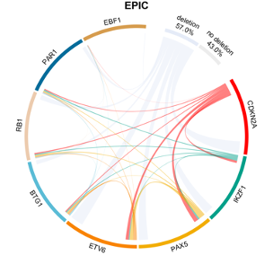

![]()


author: Keren Xu, Shaobo Li, Todd P. Whitehead, Priyatama Pandey, Alice Y. Kang, Libby M. Morimoto, Scott C. Kogan, Catherine Metayer, Joseph L. Wiemels and Adam J. de Smith
Abstract:
Background: Parental smoking is implicated in the etiology of acute lymphoblastic leukemia (ALL), the most common childhood cancer. We recently reported an association between an epigenetic biomarker of early-life tobacco smoke exposure at the AHRR gene and increased frequency of somatic gene deletions among ALL cases.
Methods: Here, we further assess this association using two epigenetic biomarkers for maternal smoking during pregnancy—DNA methylation at AHRR CpG cg05575921 and a recently established polyepigenetic smoking score—in an expanded set of 482 B-cell ALL (B-ALL) cases in the California Childhood Leukemia Study with available Illumina 450K or MethylationEPIC array data. Multivariable Poisson regression models were used to test the associations between the epigenetic biomarkers and gene deletion numbers.
Results: We found an association between DNA methylation at AHRR CpG cg05575921 and deletion number among 284 childhood B-ALL cases with MethylationEPIC array data, with a ratio of means (RM) of 1.31 [95% confidence interval (CI), 1.02–1.69] for each 0.1 β value reduction in DNA methylation, an effect size similar to our previous report in an independent set of 198 B-ALL cases with 450K array data [meta-analysis summary RM (sRM) = 1.32; 95% CI, 1.10–1.57]. The polyepigenetic smoking score was positively associated with gene deletion frequency among all 482 B-ALL cases (sRM = 1.31 for each 4-unit increase in score; 95% CI, 1.09–1.57).
Conclusions: We provide further evidence that prenatal tobacco-smoke exposure may influence the generation of somatic copy-number deletions in childhood B-ALL.
Impact: Analyses of deletion breakpoint sequences are required to further understand the mutagenic effects of tobacco smoke in childhood ALL.